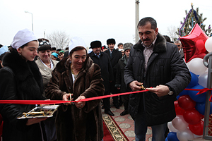
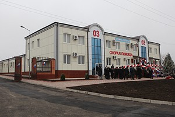
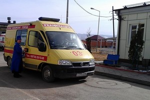
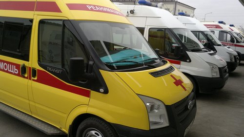
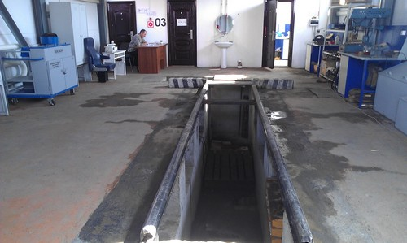
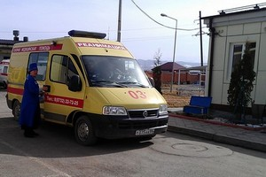
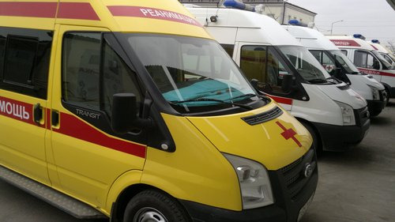
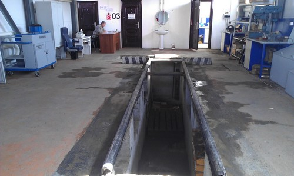
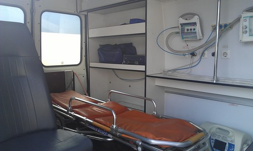

20 лет Ингушетии. Станция скорой помощи на 30 тысяч вызовов в год Открытие современной станции скорой медицинской помощи в Назрани состоялось в начале 2012 года. Объект возведен в рамках федеральной целевой программы социально-экономического развития Ингушетии на 2010-2016 годы. На строительство станции было выделено около 180 млн. рублей. В течение 10 месяцев была построена станция, рассчитанная на 30 тысяч вызовов в год, с учётом населённости города Назрани, ближайших сельских поселений и близкого расположения федеральной автотрассы. При строительстве применялись материалы, которые впоследствии могут подвергаться дезинфекции, стерилизации, обработке.
Чтобы понять глобальность и значимость этого «новоселья» для жителей Назрани, Назрановского района и столицы республики города Магаса, достаточно окунуться в прошлые будни скорой помощи. Еще недавно станция ютилась в приспособленном здании в центре Назрани. На территории, которую обслуживали всего 3 бригады медиков и 3 автомобиля, проживало около 230 тыс. человек. Сегодня Республиканская станция скорой медицинской помощи Ингушетии не имеет себе равных на Северном Кавказе, да и в целом по России не многие аналогичные учреждения смогут конкурировать с ней по уровню оснащенности, бытовым условиям, наличию спецтехники. Увеличился штат - вместо прежних 136, теперь здесь трудятся 250 человек.
Существенно изменился автопарк, и в качественном, и в количественном отношении: на линию выходят новые, отлично оснащенные кареты скорой помощи, в их числе автомобили марок «Fiat» и «Ford». В общей сложности 10 машин работают на линии, и 5 находятся в резерве. На базе прекрасно оборудованного учебного класса начал работать учебно-методический центр, где врачи и фельдшеры (причем не только с этой станции, но также из других ЛПУ республики) могут повысить квалификацию с последующим получением соответствующих сертификатов. Этот социальный объект имеет огромное значение для республики, поэтому к нему пристальное внимание со стороны Главы Ингушетии и Правительства. Здесь оказываться качественная медицинская помощь, кроме того будет создано более 250 рабочих мест, что очень важно для нашей республики. Машины дооснащены необходимым оборудованием, бригады укомплектованы спецодеждой, установлены навигационные системы ГЛОНАСС/GPS, В планах руководства компьютеризация подстанции и создание единой базы данных, создание специализированных бригад - кардиологической, реанимационной, педиатрической, травматологической, гинекологической, хирургической. Открытие современной станции скорой медицинской помощи в Назрани состоялось в начале 2012 года. Скорая медицинская помощь - вид и система экстренной медицинской помощи больным и пострадавшим при угрожающих жизни и здоровью человека состояниях, травмах, оказываемой в местах происшествия: на улице, общественных местах, учреждениях, на дому и в пути следования, при доставке заболевшего в стационар.
Вызов в любое время суток. Быстрое реагирование
 





Бригады высококвалифицированных врачей станции скорой
медицинской помощи дежурят круглосуточно, 7 дней в неделю, 365 дней в году.
Бригада выезжает на вызов незамедлительно. Набирая телефон скорой помощи, Вы можете быть уверены, что неотложная помощьбудет оказана своевременно!
Бригада доезжает до пациента в зависимости от населенного пункта:
- Назрань — 6-9 минут
- Альтиево — 5-10 минут
- Гамурзиево — 8-9 минут
- Барсуки — 7-9 минут
- Плиево — 9-14 минут
- Сурхахи — 10-12
- Экажево — 6-10 минут
- Али-Юрт — 8-10 минут
- Яндаре — 12-15 минут
- Кантышево — 13-14 минут
- Долаково — 14-17 минут
Норматив приезда
скорой помощи общепринятый по всей территории Российской Федерации - 20 минут.
Кареты скорой помощи круглосуточно несут дежурство и готовы в любой момент выехать на вызов. На станции есть автомастерская, где в любой момент можно устранить неисправность. Имеются все условиядля диагностики и качественного быстрого ремонта.
Скорая медицинская помощь - это комплекс мероприятий, направленных на оказание лечебной помощи при угрожающих здоровью и жизни пациента состояниях, к которым привели несчастные случаи или заболевания. Ее оказание связано с оперативностью и направлено на выведение пациента из критического состояния, стабилизацией состояния его здоровья и, при необходимости, доставкой в медицинское учреждение.
Большинство из нас на собственном опыте знают, что бывают ситуации в жизни, когда не только здоровье, но и жизнь человека зависят от вовремя оказанной медицинской помощи, и к каким последствиям может привести промедление при вызове скорой помощи (помните: телефон скорой помощи всегда должен быть под рукой!). Причем оказываемая помощь должна быть не только быстрой, но и качественной.
Вид транспорта
Автомобиль класса "А"
Автомобиль класса "В"